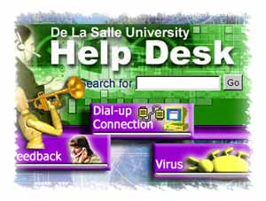
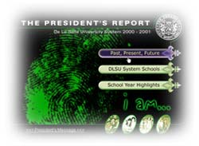

|
Documentation
Office : Updates
New
Help Desk Web Site
by Reynaldo Mendoza Jr
Our
Help Desk Website will be sporting a new look. Based on
previous feedbacks and usability problems, we have come
up with a new design that addresses these problems. Hopefully,
we can help you, our customers, find information faster
and make your surfing experience a little more enjoyable.
The
Help Desk site has it's search field in the upper left part
which you will easily see and use. This is for those who
are in a hurry and would not like to browse through the
site. Use the search button if you can't seem to find what
you are looking for.
Icons
for frequently searched topics, like dial-up connection
and account activation, have been provided on the left side
bar to facilitate better, faster information hunt. We have
put emphasis on better navigation by providing a drop down
navigation bar just like the ones you normally see in softwares
you use (e.g. Microsoft word, excel, etc). This will make
it possible to search topics within different categories
without going through a lot of clicks (hence, surfing time)
and saving you a lot of time and bandwidth, too.
We
have provided a feedback form for you to communicate feedback
on what you think of the help desk site. Click the feedback
icon on the left side bar) and you will be prompted to a
form which will ask you to write your problems or messages.
The
Help Desks will be reorganizing their site and hopefully
the new site will be up by end of February.
Online
President's Report
by
Joie B. Alavarez
The
President's Report for the SY 2000-2001 has already been
translated into a website. The web version expectedly simulates
the layout and design of the President's Report on print.
The President's Report is a tool that can be used to examine
what the DLS System has become and what it is yet to become.
In his message, Bro. Rolly Dizon said that, "When reexamining
the DLS System, we must learn to reach out and open ourselves
to the realities around us. Let us define who we really
are. We may at several points find that we are in conflict
with the world or with our very own selves, but we need
all that to change. Finding both our oneness and diversity
is the best way to grasp the idea of our being."
The
report features the past, present and future undertakings
of the DLS System, the overall shape of each System Schools,
and the highlights and statistics for School Year 2000-2001.
You can visit the President's Report at http://www.dlsu.edu.ph.
President's
Bulletin
by
Albert D. Gavino
The
online President's Bulletin is now being created. The Newsletter
would include news from system schools (such as, Zobel,
PSI, MANILA, CSB,DASMARINAS, and HSC), news from system
committees, news from the President's Office, The newsletter
also includes a profile of a featured De La Salle Brother
from all the system schools, Lasallian calendar, awards
and recognitions given to the University, and feature stories.
Another
addition to the System is the (Gregorio Araneta University
Foundation) GAUF. GAUF is set to become the 8th school of
the De La Salle University System. This would be integrated
with the new System web site, to be designed by Lemuel Cabia.
The
newsletter comes out bi-monthly from the Office of the President.
Access to the newsletter is via the www.system.dlsu.edu.ph.
Rey Mendoza designed the web site.
My.LaSalle
by
Joie B. Alavarez
 Documentation
Office's prime webmaster, Lemuel Cabia, has already completed
the redesign of the My.LaSalle (MLS) portal to tune with
the vibrancy and youthfulness of its primary users, the
DLSU students no less. It has done away with the trademark
of DLSU websites, which is the color green. Mr. Cabia had
the liberty to play with colors since MLS is an exclusive
site for DLSU students and faculty members. The MLS template
has already been forwarded to the MLS group of the Systems
Management Office for testing. Unfortunately, there is no
definite date yet as to when the new design would be fully
implemented. The ball is now on SMO's court. Documentation
Office's prime webmaster, Lemuel Cabia, has already completed
the redesign of the My.LaSalle (MLS) portal to tune with
the vibrancy and youthfulness of its primary users, the
DLSU students no less. It has done away with the trademark
of DLSU websites, which is the color green. Mr. Cabia had
the liberty to play with colors since MLS is an exclusive
site for DLSU students and faculty members. The MLS template
has already been forwarded to the MLS group of the Systems
Management Office for testing. Unfortunately, there is no
definite date yet as to when the new design would be fully
implemented. The ball is now on SMO's court.
Greenovation
by
Joie B. Alavarez
The
Greenovation website was completed in time for the Centennial
Fund Drive Program last November 29, 2001. The date marks
the ten-year countdown to Lasallian centennial in 2011,
it also signals the start of the fund-raising campaign in
celebration of the University's 100th year. The Greenovation
website was deemed as a tool to promote the campaign and
eventually facilitate the fund-raising process. "Teaching
Minds, Touching Hearts: A Hundred Years of Lasallian Education"
is the theme of the Greenovation. The Web Development Team,
however, hopes that the inputs to this web site will continuously
be received so that it will be kept always up-to-date and
thus serve as a powerful tool to raise funds.
Christmas
Decor Winner
by
Celine Rivera/Albert D. Gavino
The
DAO/DOCU office bagged the award for the best Christmas
Décor.
With
their very own ingenuity,,,,, a snow white Christmas inside
a box to illustrate the song "Winter Wonderland"
complete with "air blown in" to display a falling
snow effect. The room was laden with silver/blue lyrics
of the song glued on white paper and "snowflakes"
strewn around ...like snow glistening ..as the song goes.
A streaming video done by Francis Mark Santos was played
during the decor judging day providing the ambience of the
white Christmas that the DAO/DOCU people wanted to "experience"
right in their own room.
It
was fun doing the decoration together as a team. Each one
did a thing or two to create the scene: shredding scotch
brite to make into pine trees, eating "squid balls"
to get several sticks for the trees' stems, "grating"
styrofoams to create "snowflakes", cutting monitor
boxes to make into a box and a log cabin, painting of the
background scene, searching for and printing images for
the "characters", cutting and pasting lyrics of
the song on crepe papers, and even acting out "snow
experience". Thanks to Rey Mendoza for the concept.
Special thanks also to the CFO group for lending their vacuum
cleaner/blower to us. ...till next Christmas...
|